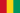

Monatliches Klimaprofil · 10-Jahres-Durchschnitt
⬆ Sélectionnez d'abord un type de projet ci-dessus
Chargement…0%
Klimabewertung /10 · 754 Reiseziele weltweit · bis zu 1 Jahr im Voraus · 10 Jahre ERA5-Daten
Reiseziel-Guides
Klimatabellen · beste Reisezeit · Wetter Monat für Monat
Unsere Guides analysieren Temperaturen, Niederschlag, Sonnenschein und Saisonalität, um die besten Reisemonate für Ihr Vorhaben objektiv zu bestimmen — Reise, Hochzeit, Festival oder Veranstaltung.
🌍 Beste Reisezeit nach Reiseziel

ConakryWann reisen🏆 Wetter-Reiseziel-Rankings
Objektive Rankings basierend auf 10 Jahren Klimadaten — finden Sie das beste Reiseziel für Ihr Vorhaben.
📅 Wohin Monat für Monat
⚖️ Reiseziel-Vergleiche
Wetter-Vergleiche nebeneinander, um zwischen ähnlichen Reisezielen zu wählen.
Eine Outdoor-Hochzeit, eine wichtige Reise, ein Dreh, eine Sportveranstaltung — wenn das Wetter wirklich wichtig ist, reicht eine einfache 7-Tage-Vorhersage nicht aus.
BestDateWeather analysiert saisonale Klimatrends, um Ihnen bei der Wahl des günstigsten Zeitpunkts zu helfen, mit einer transparenten Methode und verifizierbaren Daten.
Methodik · Über uns · FAQ · Reise-Widgets